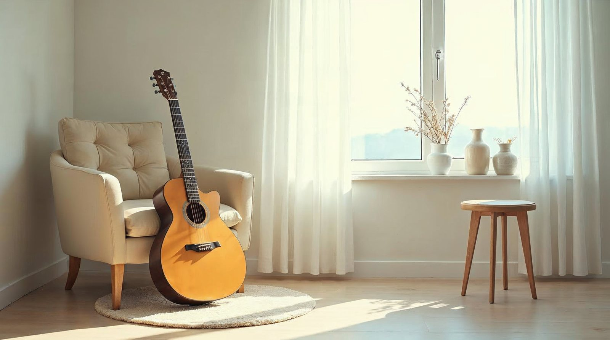
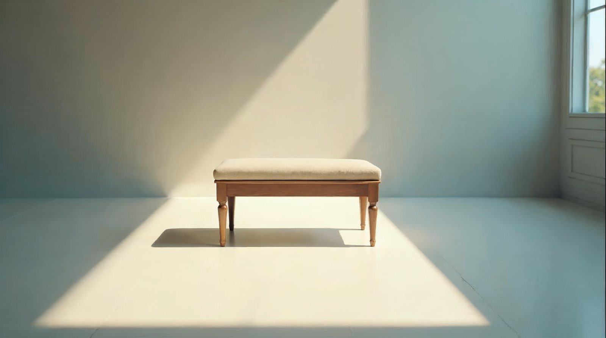
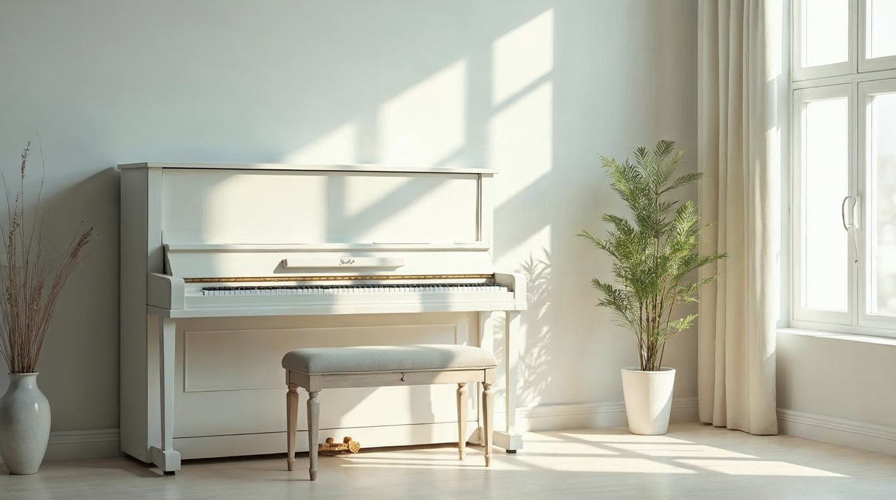
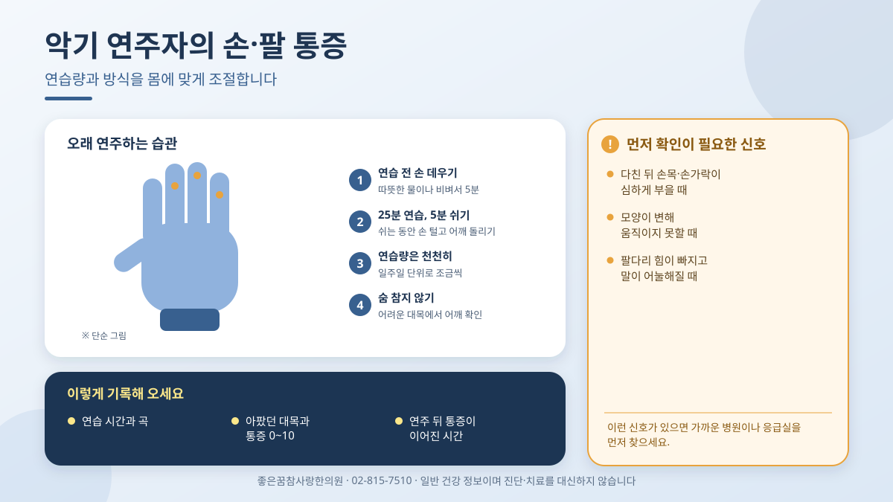

이종호 한의사 감수좋은꿈참사랑한의원 대표원장 (한의사 면허번호 19769)발행 2026-11-26 · 수정 2026-11-26
이 글의 차례
연주회를 몇 주 앞두고 연습 시간을 늘렸습니다. 처음에는 손가락 끝이 조금 얼얼한 정도였는데, 어느 날부터 손목 안쪽이 시큰하고 팔뚝이 뻐근하게 당깁니다. 쉬면 괜찮다가 악기를 잡으면 다시 아파 옵니다. 연습을 쉬자니 불안하고, 계속하자니 더 나빠질까 걱정입니다.
악기를 연주하는 분들은 통증을 쉽게 말하지 않는 경우가 많습니다. 아프다고 하면 연습이 부족하다는 말처럼 들릴까 봐, 혹은 무대에 서지 못하게 될까 봐 참고 버티십니다. 진료실에 오실 때는 이미 몇 달을 버틴 뒤인 경우가 적지 않습니다.
연주는 작은 근육을 아주 정밀하게, 오랜 시간 반복해서 쓰는 일입니다. 그래서 운동선수가 특정 관절을 다치듯 연주자도 악기마다 부담이 몰리는 자리가 있습니다. 대부분은 쓰는 양과 방식이 몸이 감당할 수 있는 범위를 넘어선 과사용에서 시작합니다.
이 글에서는 연주자의 손과 팔 통증을 어떻게 나눠 보는지, 연습 습관에서 무엇을 바꿔 볼 수 있는지, 한의원에서는 무엇을 함께 살필 수 있는지를 정리해 보겠습니다.

악기마다 부담이 몰리는 자리가 다릅니다
피아노는 손가락을 넓게 벌려 건반을 누르고, 손목을 일정한 높이로 오래 유지합니다. 옥타브를 자주 잡는 곡에서는 엄지와 새끼손가락 쪽, 빠른 패시지에서는 손등과 팔뚝 바깥쪽 근육이 쉽게 지칩니다.
바이올린과 비올라는 왼손 손가락으로 줄을 누르면서 손목을 안쪽으로 꺾고, 고개와 어깨로 악기를 받칩니다. 그래서 왼손 손가락과 손목, 목과 왼쪽 어깨에 부담이 몰리기 쉽습니다. 활을 쥐는 오른손은 엄지와 팔꿈치 바깥쪽, 어깨가 지치기 쉽습니다.
기타는 왼손으로 코드를 잡으며 엄지로 넥을 강하게 쥐는 습관이 생기기 쉽고, 오른팔은 몸통 위에 걸쳐 팔꿈치 안쪽이 눌립니다. 첼로는 왼손을 넓게 벌리고 팔을 들어 올린 자세를 오래 유지해 어깨와 팔꿈치에 부담이 갑니다.
관악기는 악기 무게를 오른손 엄지 하나로 받치는 경우가 많아 엄지 뿌리가 아프기 쉽고, 플루트처럼 팔을 옆으로 들어 올리는 악기는 어깨와 목이 지칩니다. 타악기는 손목과 팔꿈치에 충격이 반복됩니다.
악기가 바뀌지 않아도 연주 환경이 바뀌면 부담이 달라집니다. 의자가 낮아지면 손목이 꺾이고, 보면대가 낮으면 고개가 숙여지며, 무거운 악기 가방을 한쪽 어깨로만 메고 다니면 연주 전부터 어깨가 지쳐 있습니다. 진료실에서는 악기만큼 이런 환경도 꼼꼼히 여쭙습니다.
왜 연주자에게 손과 팔 통증이 잦을까요
연주에 쓰는 손가락 근육과 힘줄은 크기가 작은데, 짧은 시간에 수천 번씩 정확한 힘을 내야 합니다. 쉬는 사이가 짧으면 미세한 피로와 붓기가 회복되지 못하고 쌓이면서 통증으로 나타납니다.
연습량이 갑자기 늘어날 때 통증이 가장 잘 생깁니다. 연주회나 입시, 오디션을 앞두고 하루 연습 시간을 두 배로 늘리거나, 새 곡이나 새 악기로 바꾸거나, 오래 쉬다가 다시 시작할 때 통증이 잘 생깁니다. 몸이 따라올 시간을 주지 않은 것입니다.
연습을 하다 보면 근육은 몇 주면 적응하지만 힘줄은 그보다 훨씬 천천히 따라온다고 알려져 있어서, 힘이 붙었다고 느껴질 때가 오히려 조심할 때입니다. 연습량은 일주일 단위로 조금씩 늘리고, 늘린 주에는 손의 반응을 더 꼼꼼히 살펴 주세요.
긴장도 큰 몫을 합니다. 어려운 대목에서 숨을 참고 어깨를 끌어올리고 손가락에 필요 이상의 힘을 주는 습관이 있으면, 같은 시간을 연습해도 근육이 훨씬 빨리 지칩니다. 무대를 앞둔 불안이 이 긴장을 더 키우기도 합니다.
잠과 몸 상태도 연결됩니다. 잠이 부족하거나 끼니를 거르면 회복이 더뎌지고, 추운 연습실에서 손이 덜 풀린 채 시작하면 힘줄에 부담이 커집니다. 한의학에서는 이렇게 지나치게 쓴 근육이 굳고 저린 모습을 기혈이 소모되어 근육을 충분히 적셔 주지 못하는 모습으로 설명해 왔습니다. 진찰할 때 쓰는 전통적인 설명입니다.
어떤 통증인지 나눠 보면
연주자의 손과 팔 통증은 크게 몇 갈래로 나눠 볼 수 있습니다. 하나가 다른 것으로 이어지기도 해서, 어느 쪽이 중심인지를 살피는 것이 출발점입니다.
- 과사용 통증: 쓰는 근육과 힘줄이 뻐근하고 아프며, 연주를 길게 할수록 심해지고 쉬면 덜해집니다. 가장 흔한 경우입니다.
- 힘줄과 힘줄집의 염증: 엄지 쪽 손목이 찌릿한 드퀘르뱅 건초염, 팔꿈치 바깥이나 안쪽이 시큰한 엘보, 손가락이 딸깍 걸리는 방아쇠수지 등이 있습니다.
- 신경 눌림: 엄지부터 약지 절반이 저린 손목터널증후군, 새끼손가락과 약지가 저린 팔꿈치 척골신경 저림, 팔을 들 때 손이 저린 흉곽출구증후군 등이 있습니다.
- 연주자 근긴장이상: 아프지는 않은데 특정 대목에서 손가락 하나가 저절로 말려들거나 뻗쳐서 뜻대로 움직이지 않습니다.
마지막 경우는 특히 구분이 중요합니다. 통증보다 '손가락이 말을 듣지 않는' 느낌이 중심이고, 연주할 때만 나타나며 다른 일상 동작에서는 괜찮은 경우가 많습니다. 연습을 더 하면 오히려 굳어지는 경향이 있어서, 이런 모습이 보이면 신경과 진료를 먼저 권합니다.
연습은 쉬어야 할까요, 이어 가야 할까요
통증이 생겼다고 해서 연습을 모두 멈추는 것만이 답은 아닙니다. 다만 아픈 것을 참으며 같은 양을 이어 가는 것도 좋지 않습니다. 통증의 정도와 흐름에 따라 양과 방식을 조절하는 것이 핵심입니다.
연주 중에 통증이 조금 있다가 연주를 마치면 곧 사라지는 정도라면, 연습 시간을 나눠서 짧게 여러 번 하고 쉬는 시간을 늘려 보세요. 연주를 마친 뒤에도 통증이 몇 시간 이어지거나, 다음 날 아침까지 남거나, 일상생활에서도 아프다면 연습량을 크게 줄이고 진료를 받아 보시는 것이 좋습니다.
손을 쓰지 않고 할 수 있는 연습도 있습니다. 악보를 보며 머릿속으로 연주해 보기, 음원을 들으며 프레이즈 정리하기, 박자와 호흡 연습하기 같은 것들입니다. 쉬는 동안에도 음악과의 연결을 놓지 않을 수 있습니다.

무대 긴장과 손의 긴장은 어떻게 이어지나요
무대에 서기 전 손이 차가워지고 떨리며 손가락이 굳는 경험은 많은 연주자가 겪습니다. 긴장하면 몸은 위기에 대비하듯 근육에 힘을 주고 손끝 혈관을 좁힙니다. 그 상태로 연주하면 평소보다 훨씬 큰 힘으로 건반이나 줄을 누르게 되고, 공연이 끝난 뒤 손과 팔이 유난히 아픈 이유가 됩니다.
긴장을 완전히 없애기는 어렵지만, 몸이 긴장을 덜 붙잡도록 돕는 방법은 있습니다. 무대 전 손을 따뜻하게 데우고, 숨을 들이쉬는 것보다 내쉬는 것을 길게 몇 번 이어 가 보세요. 어깨를 귀 쪽으로 끌어올렸다가 툭 떨어뜨리는 동작도 도움이 됩니다.
연습할 때부터 긴장을 함께 연습하는 것도 방법입니다. 가족 앞에서 짧게 연주해 보거나, 녹음 버튼을 누르고 처음부터 끝까지 멈추지 않고 연주해 보면 무대와 비슷한 긴장 속에서 내 손이 어떻게 반응하는지 미리 알 수 있습니다.
입시나 오디션을 준비하는 학생이라면 잠과 끼니가 무너지기 쉽습니다. 연습 시간을 늘리는 것만큼 잠을 지키는 것이 손의 회복에 중요하다는 점을 보호자와 함께 기억해 두시면 좋습니다.
먼저 이렇게 여쭙니다
처음 오시면 저는 대략 이런 순서로 여쭙니다. 미리 생각해 오시면 이야기가 훨씬 수월해집니다.
- 어떤 악기를 하루 몇 시간, 몇 년째 연주하시나요?
- 최근 연습량, 곡, 악기, 의자나 보면대 높이에 변화가 있었나요?
- 어느 손, 어느 손가락, 어느 자리가 아픈가요? 저림이 있나요?
- 연주 중에만 아픈가요, 연주가 끝난 뒤나 일상에서도 아픈가요?
- 아프지는 않은데 손가락이 뜻대로 움직이지 않는 대목이 있나요?
- 컴퓨터, 휴대폰, 다른 손 쓰는 일은 하루에 얼마나 하시나요?
- 잠과 끼니, 무대를 앞둔 긴장은 어떠신가요?
모든 질문에 정확히 답하지 못하셔도 괜찮습니다. 아픈 대목을 연주하는 모습을 앞과 옆에서 짧게 찍어 오시면, 손목 각도와 어깨 높이, 숨 쉬는 모습까지 함께 볼 수 있습니다.
일상에서 먼저 해 볼 수 있는 것
연습 습관을 조금만 바꿔도 손과 팔이 받는 부담이 달라집니다. 한꺼번에 다 하시기보다 맞는 것을 골라 보세요.
- 연습 전 5분, 손을 따뜻한 물에 담그거나 비벼 데운 뒤 천천히 풀기
- 25~30분 연습하고 5분 쉬기, 쉬는 동안 손을 털고 어깨를 돌리기
- 연습량은 일주일에 조금씩만 늘리기
- 어려운 대목에서 숨을 참지 않는지, 어깨가 올라가지 않는지 거울로 확인하기
- 의자 높이, 보면대 위치, 어깨 받침이나 스트랩 길이를 몸에 맞게 조정하기
- 연습이 끝난 뒤 손바닥과 팔뚝을 부드럽게 주물러 주기
연습 일지를 쓰시면 좋습니다. 연습한 시간과 곡, 아팠던 대목, 통증의 정도를 함께 적어 두면 어떤 조건에서 통증이 오는지 보이기 시작합니다. 레슨 선생님과 함께 보시면 자세와 운지를 바꾸는 데도 도움이 됩니다.
연주 외의 손 쓰는 일도 살펴보세요. 연습을 마치고 곧바로 몇 시간씩 휴대폰을 보거나 키보드 작업을 하면 손은 쉬지 못합니다. 하루 전체로 보면 손을 쓰는 시간이 생각보다 훨씬 긴 경우가 많습니다.
한의원에서 함께 살필 수 있는 경우
- 연습량이 늘면서 손가락, 손목, 팔뚝이 뻐근하고 아픈 경우
- 팔꿈치 바깥이나 안쪽, 엄지 쪽 손목이 시큰한 경우
- 악기를 받치는 자세 때문에 목과 어깨, 날개뼈 주변이 굳는 경우
- 공연이나 입시를 앞두고 긴장과 얕은 잠이 함께 이어지는 경우
- 추운 연습실에서 손이 잘 풀리지 않고 시린 경우
좋은꿈참사랑한의원에 오시면 먼저 아래 '먼저 확인이 필요한' 신호가 없는지부터 봅니다. 그다음 맥을 짚고, 손끝부터 목까지 이어지는 근육과 힘줄을 차례로 만져 보며 어느 자리에 부담이 몰렸는지 확인합니다. 저림이 있다면 어느 신경이 지나는 길인지도 함께 살핍니다.
진찰한 내용을 바탕으로 침, 온열 관리, 한약 상담 가운데 지금 상태에 맞는 것을 정합니다. 연주 일정이 있다면 공연 직전에는 자극을 줄이는 등 일정에 맞춰 진료 간격과 세기를 조절합니다. 한약을 상의할 때는 드시는 약을 모두 확인하고 신중하게 정합니다.
힘줄이 크게 상했거나 신경 눌림이 심한 경우에는 정형외과나 재활의학과 진료를 함께 권하고, 손가락이 뜻대로 움직이지 않는 근긴장이상이 의심되면 신경과 진료를 먼저 안내합니다. 한의원 진료는 그 곁에서 몸의 긴장과 회복을 함께 돌보는 쪽입니다.
이렇게 기록해 오시면 상담이 쉬워집니다
연주자의 통증은 연습과 무대 일정에 따라 크게 달라집니다. 2주 정도만 간단히 적어 보세요.
- 하루 연습 시간과 쉬는 시간, 연습한 곡
- 아팠던 대목과 자리, 통증의 정도를 0에서 10으로
- 연습이 끝난 뒤 통증이 얼마나 이어졌는지
- 저림이 있었던 손가락과 시각
- 잠든 시각과 깬 시각, 무대나 레슨 일정
- 컴퓨터와 휴대폰을 쓴 대략의 시간
기록을 나란히 놓고 보면 연습량과 통증 사이의 관계가 보이기 시작합니다. 그 흐름을 바탕으로 연습 계획을 함께 다시 짜 볼 수 있습니다.

오래 연주하기 위해서
연주자에게 손은 악기만큼 소중한 도구입니다. 아픔을 참고 버티는 것이 성실함처럼 느껴질 수 있지만, 오래 연주하려면 몸이 보내는 신호를 일찍 알아차리는 것이 훨씬 중요합니다.
이번 주에는 25분 연습하고 5분 쉬는 것부터 시작해 보세요. 그리고 아팠던 대목을 짧게 찍어 두세요. 다음에 오시면 그 영상과 연습 일지부터 함께 보겠습니다.
이런 증상은 먼저 확인이 필요합니다
- 넘어지거나 부딪힌 뒤 손목이나 손가락이 심하게 붓고 모양이 변해 움직이지 못하는 경우
- 한쪽 팔다리에 갑자기 힘이 빠지거나 말이 어눌해지고 얼굴 한쪽이 처지는 경우
이런 신호가 있으면 한의원보다 가까운 병원이나 응급실을 먼저 찾으세요.
함께 읽으면 좋은 글
- 아기를 안거나 휴대폰을 쥘 때 엄지 쪽 손목이 찌릿한 드퀘르뱅 건초염은 어떻게 살피나요?
- 팔꿈치 바깥쪽·안쪽이 시큰한 테니스엘보와 골프엘보는 어떻게 살피나요?
- 새벽에 손이 저려 깨는 손목터널증후군은 어떻게 살피나요?
- 팔꿈치를 오래 굽히고 있으면 새끼손가락과 약지가 저린 팔꿈치 척골신경 저림(주관증후군)은 어떻게 살피나요?
- 팔을 들면 손이 저리고 어깨 앞이 당기는 흉곽출구증후군은 목디스크와 어떻게 다르고 어떻게 살피나요?

여쭙는 것
- 어떤 악기를 하루 몇 시간, 몇 년째 연주하시나요?
- 최근 연습량, 곡, 악기, 의자나 보면대 높이에 변화가 있었나요?
- 어느 손, 어느 손가락, 어느 자리가 아픈가요? 저림이 있나요?
생활에서 해 볼 것
- 연습 전 5분, 손을 따뜻한 물에 담그거나 비벼 데운 뒤 천천히 풀기
- 25~30분 연습하고 5분 쉬기, 쉬는 동안 손을 털고 어깨를 돌리기
- 연습량은 일주일에 조금씩만 늘리기
한의원에서 함께 살필 것
- 연습량이 늘면서 손가락, 손목, 팔뚝이 뻐근하고 아픈 경우
- 팔꿈치 바깥이나 안쪽, 엄지 쪽 손목이 시큰한 경우
- 악기를 받치는 자세 때문에 목과 어깨, 날개뼈 주변이 굳는 경우
먼저 확인이 필요한 신호
- 넘어지거나 부딪힌 뒤 손목이나 손가락이 심하게 붓고 모양이 변해 움직이지 못하는 경우
- 한쪽 팔다리에 갑자기 힘이 빠지거나 말이 어눌해지고 얼굴 한쪽이 처지는 경우
한눈에 보는 표
| 구분 | 핵심 |
|---|---|
| 여쭙는 것 | 어떤 악기를 하루 몇 시간, 몇 년째 연주하시나요? 최근 연습량, 곡, 악기, 의자나 보면대 높이에 변화가 있었나요? |
| 생활에서 해 볼 것 | 연습 전 5분, 손을 따뜻한 물에 담그거나 비벼 데운 뒤 천천히 풀기 25~30분 연습하고 5분 쉬기, 쉬는 동안 손을 털고 어깨를 돌리기 |
| 한의원에서 함께 살필 것 | 연습량이 늘면서 손가락, 손목, 팔뚝이 뻐근하고 아픈 경우 팔꿈치 바깥이나 안쪽, 엄지 쪽 손목이 시큰한 경우 |
| 먼저 확인이 필요한 신호 | 넘어지거나 부딪힌 뒤 손목이나 손가락이 심하게 붓고 모양이 변해 움직이지 못하는 경우 한쪽 팔다리에 갑자기 힘이 빠지거나 말이 어눌해지고 얼굴 한쪽이 처지는 경우 |
자주 묻는 질문
연주할 때 조금 아픈데 계속 연습해도 될까요?
연주를 마치면 곧 사라지는 정도라면 연습을 짧게 나누고 쉬는 시간을 늘려 보세요. 연주 뒤에도 몇 시간 이어지거나 다음 날까지 남는다면 연습량을 줄이고 진료를 받아 보시길 권합니다.
아프지는 않은데 손가락 하나가 자꾸 말려 들어가요.
통증 없이 특정 대목에서만 손가락이 뜻대로 움직이지 않는다면 연주자 근긴장이상일 수 있어 신경과 진료를 먼저 권합니다. 연습량을 늘리면 오히려 굳어질 수 있습니다.
공연 직전에도 침 치료를 받아도 되나요?
공연 일정을 알려 주시면 직전에는 자극을 줄이는 등 일정에 맞춰 조절합니다. 처음 받으시는 분이라면 공연 바로 전보다 여유 있게 시작하시는 편이 좋습니다.
손목 보호대를 차고 연습해도 될까요?
보호대가 손목 움직임을 막아 다른 관절에 부담을 옮길 수 있어서, 연주 중보다는 쉬는 시간이나 잘 때 쓰는 쪽을 권하는 경우가 많습니다. 상태에 따라 함께 정합니다.
연습 전에 스트레칭은 어떻게 하나요?
차가운 근육을 세게 늘이기보다 먼저 손을 데우고, 손가락과 손목을 천천히 굽혔다 펴는 정도로 시작하세요. 당김이 느껴지는 데서 멈추고 숨을 길게 내쉬면 충분합니다.
좋은꿈참사랑한의원은 재진 때 지난번 이야기부터 이어서 여쭙니다. 진료시간과 예약은 오시는 길에서 확인하세요.
어디서 상담받을 수 있나요?
좋은꿈참사랑한의원은 서울 동작구 만양로2길 2 신성빌딩 3층·5층(서울 동작구 상도동, 7호선 상도역 3번 출구 근처)에 있습니다. 한의사 3명(이종호 대표원장, 조영기 수석진료원장, 정원영 진료원장)이 진료합니다. 진료시간은 평일 09:30~20:00(점심 13:00~14:00), 토·일·공휴일 09:30~15:00이며, 방문 전 전화로 확인을 권합니다. 예약은 네이버 예약, 카카오톡 상담, 전화 02-815-7510로 받습니다.
이 글은 일반적인 건강 정보이며 개인의 진단이나 치료를 대신하지 않습니다. 증상이 있거나 복용 중인 약이 있다면 진료를 통해 확인하세요. 치료 효과는 개인마다 다를 수 있습니다.
작성 기준: 일반적으로 알려져 있는 건강 정보를 참고해 정리했습니다(대표원장 감수). 증상 기록은 1~2주 동안 하루 1회, 비슷한 시간에 적어 오시면 지난 상태와 비교하기 쉽습니다.